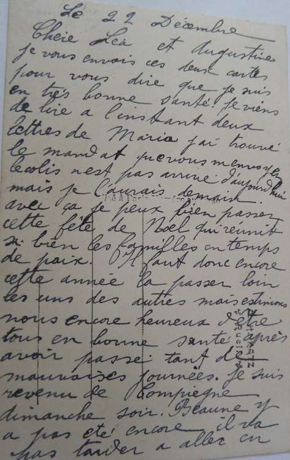

In the bleak Midwinter
Décembre 1915, voilà maintenant 16 mois que la guerre a commencé et personne n’en voit la fin. Les espoirs d’une guerre courte sont maintenant oubliés et c’est un deuxième hiver dans les tranchées que vivent les soldats.
Noël 1914 avait créé une brève lueur d’espoir, quand, dans la région d’Ypres, soldats allemands et anglais avaient fraternisés dans le No Man’s Land qui séparait leurs tranchées. Un moment d’humanité rare et spontané après le choc des quatre premiers mois de guerre. Un moment de répit où chaque camp enterra ses morts et échangea des hymnes et chants de Noël. Un moment de fraternité au cours duquel anglais et allemands jouèrent même un match de football …
Mais les Etats-Majors ne voyaient pas ces velléités de fraternisation d’un bon œil, et très vite ils reprirent les choses en mains. Aucune trêve de Noël n’aura plus jamais lieu jusqu’à la fin de la guerre, sous peine de trahison et passage au peloton d’exécution.
Pour en savoir plus sur cette épisode de la guerre :
En Savoir Plus
Auguste et Gabriel connaissent en fait une période de calme pour ce Noël 1915. Après avoir subi des pertes très importantes lors de la bataille pour Notre Dame de Lorette, leurs régiments ont été envoyés en cantonnement prolongé. Il s’agit de reposer les hommes mais aussi de reconstituer les compagnies avec du sang neuf et de nouvelles recrues pour les batailles qui s’annoncent.
Ainsi Auguste est du côté de Lure en Haute Saône et Gabriel revient d’un entraînement à Compiègne … il appelle cela aller à l’école !...
Ma chère petite Léa,
Tu m’excuseras si j’ai tant tardé à t’écrire.
Je suis toujours en très bonne santé et je pense que ma carte te trouveras de même. Je t’envoie une vue du coin à six kilomètres où nous sommes.
Tu n’as qu’à regarder sur la carte, tu le trouveras – nous sommes au Nord.
Ma petite Léa, il faut bien te soigner et soigne aussi la marraine et le tonton.
Je termine en t’embrassant bien fort.
Auguste
Chers Parents,
Je suis rentré hier de Compiègne en bonne santé.
J’ai trouvé en arrivant la lettre et le colis, rien ne s’est âbimé. J’avais aussi deux lettres d’Auguste qui m’attendaient.
Je me suis pas ennuyé à l’école, malgré que la saison n’est pas bien bonne pour ça, seulement ça change un peu.
Maria me dit qu’elle conduit bien Mouton à présent, il est donc toujours bien sage.
Rien de nouveau. Je termine en vous embrassant.
Gabriel
Arrive la saison des vœux. Chacun est triste d’être séparé, mais chacun trouve du réconfort dans la pensée d’avoir survécu à cette première année de guerre. Et bien sûr, tout le monde souhaite que le Noël de 1916 sera un Noël de paix …
Chères Léa et Augustine,
Je vous envoie ces deux cartes pour vous dire que je suis en très bonne santé.
Je viens de lire à l’instant deux lettres de Maria, j’ai trouvé le mandat que vous m’avez envoyé. Le colis n’est pas arrivé aujourd’hui, mais je l’aurai demain. Avec ça, je peux bien passer cette fête de Noël qui réunit si bien les familles en temps de paix.
Il faut donc encore cette année la passer loin les uns des autres mais estimons-nous encore heureux d’être tous en bonne santé après avoir passé tant de mauvaises journées.
Je suis revenu de Compiègne dimanche soir. Beaune y a pas été encore, il va pas tarder à aller en ...

... permission, il est bien tranquille en ce moment. Il fait le travail d’un adjudant qui est de St Eloy. Je tâcherais de m’arranger avec lui pour que vous puissiez le voir.
J’ai reçu un colis de ma filleule hier, elle m’a envoyé aussi un flacon – rien ne s’est abîmé en route.
Enfin, tâchez de bien passer cette fête sans vous faire de mauvais sang pour nous. Auguste m’a écrit aujourd’hui, nous sommes pas trop malheureux pour le moment. La lampe d’Antoine marche très bien.
Je termine en vous embrassant tous du fond du cœur.
Gabriel
Ma chère filleule,
Je t’envoie mes meilleurs souhaits de bonne année.
Auguste
Ma chère petite Léa,
Je te souhaite une bonne et heureuse année.
J’espère qu’elle sera plus heureuse pour nous que celle que nous venons de passer.
Embrasse bien fort tous nos chers parents pour moi.
Ton frère qui t’embrasse bien fort.
Auguste
Cher parrain,
A l’occasion du nouvel an, je viens t’offrir mes bons souhaits de bonne année.
Souhaitons que l’année 1916 soit meilleure que celle qui s’est écoulée. Oui, un Noël passé loin de chez soi, c’est bien long.
Nous t’embrassons bien affectueusement.
Ta filleule qui t’aime.
Louise
Cher Gabriel.
A l’occasion du nouvel an, nous nous unissons tous pour t’exprimer de grand cœur tous nos meilleurs vœux de bonheur.
Nous souhaitons que l’an 1916 te soit très favorable
Crois toujours à la bonne sympathie de nous tous et accepte nos souhaits très sincères.
Tes petites amies.
Louise et Germaine Legay
Ma chère petite filleule,
Je t’envoie deux mots pour te souhaiter une bonne fête de Noël.
Je la passerai loin de toi, mais j’espère que ce sera pour la dernière fois.
Ton petit parrain qui t’aime et qui t’oublie pas.
Auguste
Chère Maria,
Je t’écris deux mots pour te souhaiter une bonne fête.
Moi ici je la passerai, mais loin de vous tous.
Auguste
Un bonjour de ton parrain.
Auguste
C’est à l’occasion de toutes ces fêtes de famille manquées que la cruauté et l’absurdité sont ressenties le plus vivement par les soldats et ceux et celles restés au village.
Dans Le Feu d’Henri Barbusse, un autre classique sur la Grande Guerre, il est un passage qui exprime parfaitement cette absurdité. Des soldats français et allemands qui prient le même Dieu dans des tranchées qui se font face … un Dieu qui ne sait pas quoi faire face à cette folie humaine.
C’est comme si les soldats chantaient le même cantique, le même chant de Noël. Un peu comme cette version de Still, Still, Still chantée en allemand et anglais par Bryn Terfel …

… Il y eut un silence. L'aviateur s'écria :
— Les officiants essayaient, des deux côtés, de se couvrir la voix!
— Qu'est-ce que c'est que ça ? fit le zouave étonné,
— C'est’ qu’ tu déménages, mon pauv’ vieux ? demanda un chasseur blessé à la main, un bras lié au corps, en quittant un instant des yeux sa main momifiée pour considérer l'aviateur.
Celui-ci avait les regards perdus, et essayait de traduire un mystérieux tableau que partout il portait devant ses yeux
— D'en haut, du ciel, on ne voit pas grand-chose, vous savez. Dans les carrés des champs et les petits tas de villages, les chemins font comme du fil blanc. On découvre aussi certains filaments creux qui ont l’air d’avoir été tracés par la pointe d’une épingle qui écorcherait du sable fin. Ces réseaux qui festonnent la plaine d’un trait régulièrement tremblé, c’est les tranchées.
Dimanche matin, je survolais la ligne de feu. Entre les bords extrêmes, entre les franges des deux armées immenses qui sont là, l’une contre l'autre à se regarder et à ne pas se voir en attendant — il n'y a pas beaucoup de distance : des fois quarante mètres, des fois soixante. À moi, il me paraissait qu’il n'y avait qu'un pas à cause de la hauteur géante où je planais.
Et voici que je distingue, chez les Boches et chez nous, dans ces lignes parallèles qui semblaient se toucher, deux remuements pareils : une masse, Un noyau animé et, autour, comme des grains de sable noirs éparpillés sur du sable gris. Ça ne bougeait guère; ça n'avait pas l'air d'une alerte! Je suis descendu quelques tours pour comprendre.
« J'ai compris. C'était dimanche et c'étaient deux messes qui étaient célébrées sous mes yeux : l'autel, le prêtre et le troupeau des types, Plus je descendais, plus je voyais que ces deux agitations étaient pareilles, si exactement pareilles que ça avait l'air idiot. Une des cérémonies —au choix — était le reflet de l'autre. Il me semblait que je voyais double.
Je suis descendu encore; on ne me tirait pas dessus. Pourquoi ? Je n'en sais rien. Alors, j'ai entendu. J'ai entendu un murmure — un seul. Je ne recueillais qu’une prière qui s'élevait en bloc, qu'un seul bruit de cantique qui montait au ciel an passant par moi. J'allais et venais dans l’espace pour écouter ce vague mélange de chants qui étaient l’un contre l’autre, mais qui se mêlaient tout de même —et plus ils essayaient de se surmonter l’un l’autre, plus ils s’unissaient dans les hauteurs du ciel où je me trouvais suspendu.
«J'ai reçu des shrapnells au moment où, très bas, je distinguais les deux cris terrestres dont était fait leur cri : «Gott mit uns ! » et « Dieu est avec nous! » — et je me suis renvolé. »
Le jeune homme hocha sa tête couverte de linges. Il était comme affolé par ce souvenir.
— Je me suis dit, à ce moment : «Je suis fou! »
— C'est la vérité des choses qu'est folle, dit le zouave.
Les yeux luisants de délire, le narrateur tâchait de rendre la grande impression émouvante qui l'assiégeait et contre laquelle il se débattait.
— Non! mais quoi ! fit-il. Figurez-vous ces deux masses identiques qui hurlent des choses identiques et pourtant contraires, ces cris ennemis qui ont la même forme Qu'est-ce que le Bon Dieu doit dire, en somme ! Je sais bien qu'il sait tout ; mais, même sachant tout, il ne doit pas savoir quoi faire.
— Quelle histoire ! cria le zouave.
— I' s’ fout bien de nous, va, t'en fais pas.
— Et pis, qu'est-ce que ça a de rigolo, tout ça ? Les coups de fusil parlent bien la même langue, pas, et ça n'empêche pas les peuples de s'engueuler avec, et comment!
— Oui, dit l'aviateur, mais il n'y a qu'un seul Dieu. Ce n'est pas le départ des prières que je ne comprends pas, c'est leur arrivée …
Extraits - Le Feu - Henri Barbusse
Voici l’une des dernières cartes de Gabriel. Une carte où il souhaite que l’année 1916 soit meilleure que l’année passée … deux mois plus tard, il mourra sur le champ de bataille.
Chers parents,
Je vous écris pour vous donner de mes nouvelles qui sont très bonnes pour l’instant.
Je profite en même temps de l’occasion pour vous souhaiter à tous une bonne et heureuse année, et surtout une parfaite santé.
L’année dernière, on avait tous l’espérance de n’être plus en guerre pour cette nouvelle année, mais malheureusement on ne peut même pas savoir si dans un an ce sera tout fini.
Enfin, les souhaits de bonne année que nous nous sommes faits ont été bien exaucés quand même puisque nous avons passé cette année toute la famille en bonne santé.
J’espère que cette nouvelle année, ce passera la même chose.
Auguste m’a écrit hier, il est en bonne santé.
Rien de nouveau à vous apprendre. Je termine en vous embrassant du fond du cœur.
Gabriel
Des Sillons aux Tranchées